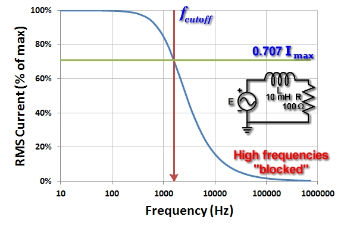
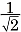
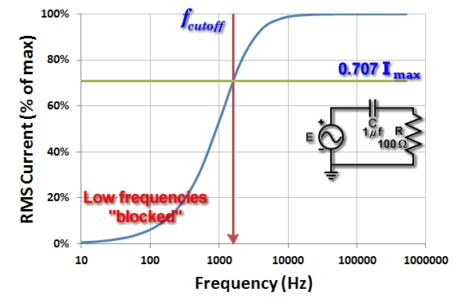
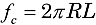
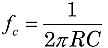

Finding the Cutoff Frequency
|  |
|
Figure 1. Frequency response of a |
AC circuits with capacitors and inductors respond to the frequency, as well as the voltage. We can find the frequency value that reduces the circuit power from a maximum down to half.
Frequency response in series RL circuits
The magnetic field within an inductor L resists the rapid changes of AC signals. Slow changes, like those occurring in low frequency signals, pass through inductors unimpeded, but rapidly changing, high frequency signals are "resisted" by the inductor. That means less current at high frequencies, and so, less power delivered to the series resistor R. Figure 1 shows the drop in current as the frequency increases in a series RL circuit.
The cutoff frequency, fc is an important parameter to describe this behavior. This is the frequency at which the power delivered by the circuit is cut in half. Since P = I2R, half the power will occur when the current drops to Imax, or about 0.707 Imax. In your SPARKS circuits, you can measure the voltage drop VR across the resistor as you adjust the frequency, and note the frequency fc when VR just drops to 0.707 Vmax.
Frequency response in series RC circuits
|  |
|
Figure 1. Frequency response of a |
Capacitors also resist the changing AC voltage, but in an opposite fashion than inductors. The effects of rapidly changing electric fields pass through a capacitor C unimpeded, but now slowly changing fields are "resisted." That means less current at low frequencies. Figure 2 shows the small current values at low frequencies in a series RC circuit.
Just as with the inductor, you can determine the cutoff frequency for the RC circuit. Again, measure VR across the resistor as you adjust the frequency, and note the frequency fc when it drops to 0.707 Vmax.
Calculating the cutoff frequency
If you know the circuit values for the resistor, capacitor, and inductor, you can calculate the cutoff frequency value.
For the series RL circuit:

For the series RC circuit:

Try these formulas using the circuit values in the figures above and see if your values for fc agree with the graph. Be careful to include the scientific notation required by the unit prefixes.